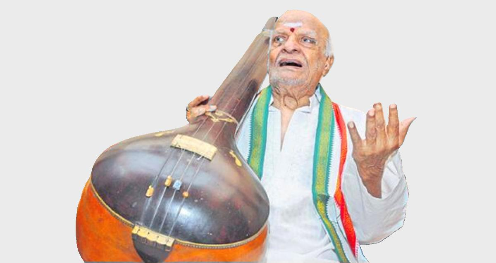
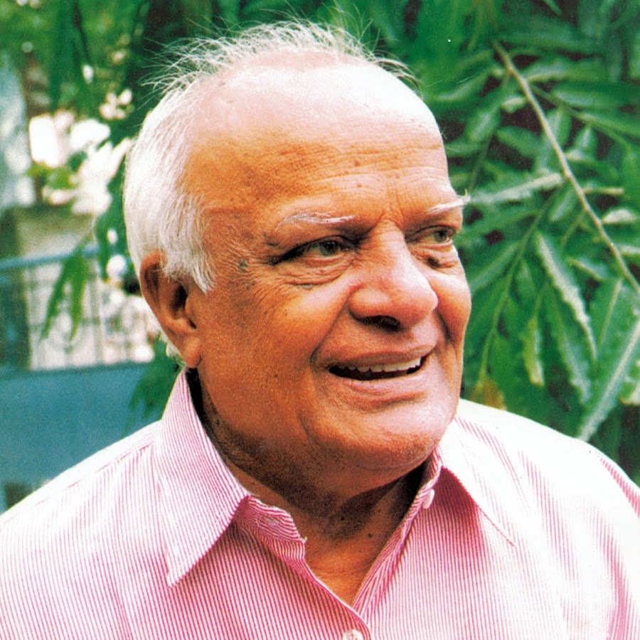

AboutBalantrapu Rajanikanta Rao (29 January 1920 – 22 April 2018) was an Indian writer, composer and poet in the Telugu language. He was the son of Balantrapu Venkatarao, one of modern Telugu poet-duo "Kavi Rajahamsa" Venkata Parvateswara Kavulu. He won several national and state level awards for his work. He died in April 2018 at the age of 98. |

|
|

|
Early Life
|
Career
Broadcaster
Rajanikanta Rao began his career as a programme executive in AIR-Madras in the year 1941. He was responsible for writing and composing the first Telugu song ever broadcast in independent India on the midnight of 15 August 1947, following the speech of Jawaharlal Nehru; "Our tryst with destiny". The song "Mroyimpu jayabheri" was sung by T. Suryakumari. In 1948 to celebrate the first anniversary of Independence the song "Madi swatantra desam " was written and composed. This was also sung by Tangaturi Suryakumari. As the programme executive in AIR-Vijayawada he was the originator of 'Bhakti Ranjani' a devotional programme.
Rajanikanta Rao became the station director of AIR-Ahmadabad, AIR-Vijayawada and retired as the station director of AIR-Bangalore (1976–78) – completing 36 years in the broadcasting field. He initiated and designed an interactive radio programme, called "Dharmasandehalu" hosted by Mr.Ushasri.
He was the first director to broadcast an Annamacharya kirtana everyday before 7.00 clock news bulletin. He was made the Producer Emeritus of Akashavani in 1982.
Artist
Since the age of twenty one he has written lyrics, composed songs and directed ballets. Under the pseudonyms Nalini and Taranath he has composed many tunes for popular movies like Swargaseema, Gruhapravesam, etc.
Kuchipudi ballets and Yakshaganas such as 'Sri Krishna Saranam Mama', 'Menaka Viswamitra', Vipranarayana', 'Chandidas' and 'Subhadraajuniyam' have won him accolades
His literary works include 'Satapatra Sundari'- a collection of lyrics, 'Andhra Vaggeyakara Charitam'- his magnum opus (described below) and 'Jejimamayya Patalu'- a collection of songs for children and 'Etiki edureeta'.
He composed and conducted music for Vadyabrinda (a national orchestra), AIR-Delhi and Vadyabrinda, AIR-Madras.
His popular compositions included Andhri – an origin of the Raga Kalyani, Raga Desavarali, Raga Devasalagam, Viswayanam-the voyage of the universe and 'Sangeeta Gangotri' – a musical composition on the evolution of Indian music to name a few.
Musicologist
'Andhra Vaggeyakara Charitam' is regarded as his magnum opus. It consists of biographies of lyricists and music composers along with a history and evolution of Andhra music, which won in 1961 the Central Sahitya Akademi Award
In the year 1980, Mr. Rajanikanta Rao was awarded an Honorary Doctorate by his alma mater Andhra University. From 1988 to 1990, he worked as a visiting professor of the Telugu University, Rajahmundry.
He then joined the Tirumala Tirupati Devasthanams (TTD) as a special officer of the Sri Venkateswara Kalapeetham and worked there for 4 years.
He has been presenting research papers on musicology in various conferences of Music Academy, Madras on subjects that include Kshetrayya's lyrics, Geeta Govinda, Ragas of Gandhara Grama, ancient scales of Indian music, etc.
He shared his memoirs of rich socio-cultural experiences over a lifetime through 'Rajani Bhavatarangalu', a weekly column published in the Telugu newspaper Andhra Prabha.
Interview with Chalam
In 1972, Rajanikanta Rao had taken an interview of the popular Telugu writer with the name Gudipati Venkatachalam as the Director of AIR-Vijayawada. This interview remains the only radio-broadcast interview of the famous writer till this day.